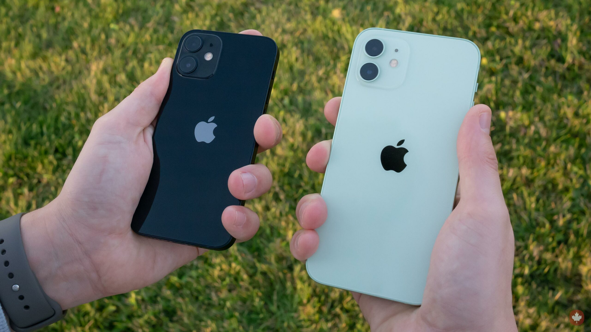

iPhone 12 vs iPhone 12 Mini – Which Should You Choose?

Apple released both the iPhone 12 and the iPhone 12 Mini in the same year, offering nearly identical specs in two different sizes. But which one should you buy? Here’s a breakdown of the key differences and similarities to help you make the right choice.
Comparison Table
| Feature | iPhone 12 | iPhone 12 Mini |
|---|---|---|
| Display Size | 6.1-inch Super Retina XDR | 5.4-inch Super Retina XDR |
| Battery Life | Up to 17 hours video playback | Up to 15 hours video playback |
| Dimensions | 146.7 x 71.5 x 7.4 mm | 131.5 x 64.2 x 7.4 mm |
| Weight | 164g | 135g |
| Price | Higher | Lower |
| Performance | Both use the A14 Bionic chip – performance is identical | |
Camera
If you are searching for better camera systems, you will find no difference between the two models. Both have the same 12 MP wide + ultra-wide cameras, support Dolby Vision, and record 4K at 60 fps.
Performance
Both use Apple’s A14 Bionic chip, but the Mini heats up more than the base iPhone 12, which can reach 40 °C+ on a normal summer day with heavy gaming. It is still one of the best 60 fps gaming devices for its price range, but you will definitely need a cooler.
The iPhone 12 mini scores 1,072,354 on AnTuTu according to Kimovil.com, while in our own testing the iPhone 12 reached a higher score of 1,100,930. Both are still comparatively better than the Snapdragon 8 Gen 1 (used in the Galaxy S22), which also suffered from overheating issues.
Battery Performance
Both the iPhone 12 and 12 mini suffer from battery issues. Most units now have at most 95% health, which is low by 2025 standards. In our experience, the iPhone 12 lasts around 4 hours of use per full charge (with light gaming), while the iPhone 12 mini lasts less than 3.5 hours under similar use.
The iPhone 12 has a 2,815 mAh battery, which is actually smaller than the iPhone 11’s, while the iPhone 12 mini has a 2,227 mAh battery.
Display
Both have Super Retina XDR OLED displays with a 60 Hz refresh rate. The difference is barely noticeable, except that the iPhone 12 mini has a slightly higher pixel density (476 ppi compared to the iPhone 12’s 460 ppi).
Pros and Cons
- iPhone 12 Pros: Bigger display, slightly better battery
- iPhone 12 Cons: More expensive, less pocket-friendly
- iPhone 12 Mini Pros: Compact size, same power, more affordable
- iPhone 12 Mini Cons: Smaller screen, shorter battery life
If you prefer one-handed use and portability, the Mini is an excellent choice. If you consume a lot of content or prefer a larger screen, the iPhone 12 offers more comfort. Both are fantastic options with flagship specs — the choice depends on your lifestyle.